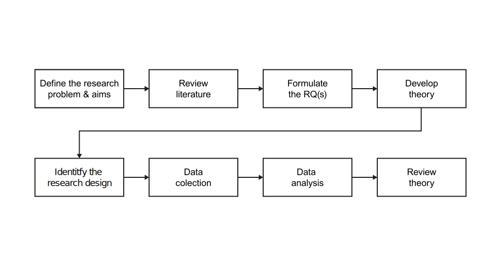

Some thoughts on structuring research projects
Neu-Ulm University of Applied Sciences
August 15, 2025
Science is both a product (the body of knowledge) and a process (doing scientific research).
All scientific knowledge is a set of time-bound conjectures.
The body of knowledge—the product of science—describes the current accumulation of what we know, what we can measure, what we claim to explain (e.g., theory, evidence, methods).
Good Theory =
Clear Concepts + Logical Arguments + Testable Predictions

If I have seen further, it is by standing on the shoulders of giants. Sir Isaac Newton, English scientist (1642 -1726)
You need to acquire at least three types of knowledge before yo can even start your research (Recker, 2021)—knowledge about:
the domain and topic, relevant theories and available evidence & relevant research methods
When consuming scientific literature, it’s not always necessary or efficient to read every sentence from start to finish.
You can apply the read-interpret-write strategy to keep focused and make the most of your reading (adapted from read-think-interpret strategy in Recker, 2021).
While reading, interpreting and writing, always keep your research goals in mind.
Build on the shoulder of giants—your research should build upon high quality readings, which are usually found in leading journals and conferences (especially recent topics).
Initially, scan leading journal/conference; start with the most recent articles.
Later, adopt a structured approach, e.g., run structured queries against databases such as the the AIS eLibrary or Web of Science.
Look beyond a read to avoid overlooking relevant parts of the literature.
Do an exploratory search for literature on a phenomenon that interests you.
You might not be the first, so look for and utilize structured literature reviews:
They contribute to the overall understanding of a subject area and highlight areas for your research.
A systematic, explicit, and reproducible method for identifying, evaluating, and synthesizing the existing body of completed and recorded work produced by researchers, scholars, and practitioners. Fink (2019, p. 17)
There are three different types of literature reviews (Okoli, 2015):
The focus here is on the last one, which is distinguished by its scope and rigor.
A systematic literature review is usually conducted to
It is most efficient to use open access databases (such as Google Scholar and the Directory of Open Access Journals) and specific subject databases (such as ProQuest, Scopus, EBSCO, IEEE Xplore and the ACM Digital Library) to search for literature.
Search queries that reflect the defined search and inclusion criteria need to be defined.
The search should be supplemented further by backward and forward search.
Let’s search a structured literature review on a specific topic or a particularity of it, a theory that could inform your study, or a method you could use — what are you looking for?
The research question is a logical conclusion to a set of arguments.
These arguments stress that there is
RQ: Why do people reject new technologies?
Gap vs. hook.
The gap is usually the argument that something hasn’t been done yet.
The hook is a strategy to find a problem that someone cares about.
A bad gap is “nobody has studied …”, a good gap indicates a problem.
Research questions are typically one of two types (Recker, 2021):
Type 1:
What, who, and where?
Type 2:
How and why?
The research question help you focus the study and give you guidance for how to conduct it.
Recker (2021) proposes following principles to reflect on if a RQ serves these functions well.
The information systems discipline also has excellent web resources that are dedicated to the literature about theories and methodologies: